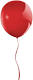

Websiten gestalten mit HTML und CSS. Grundlagen.
Startseite
Webseiten bestehen aus rechteckigen Kästchen, die über-,neben- und ineinandergestapelt werden. Alles Runde ist entweder Trick, Grafik oder beides.
Die folgenden Schritte zeigen den Weg vom Zusammenbauen der Kisten bis zur fertig gestalteten Webseite:
- So funktioniert HTML
- Wichtige HTML-Elemente
- Überschriften
- Absätze und Listen
- Links und Grafiken
- Gestalten mit CSS
Besuchen Sie die Website zum Besuch für weitere Informationen.
Little Boxes · Kästchenweg 12 · 01234 Boxberg
Tel: 01234 567890 · Fax: 01234 567891
Tel: 01234 567890 · Fax: 01234 567891